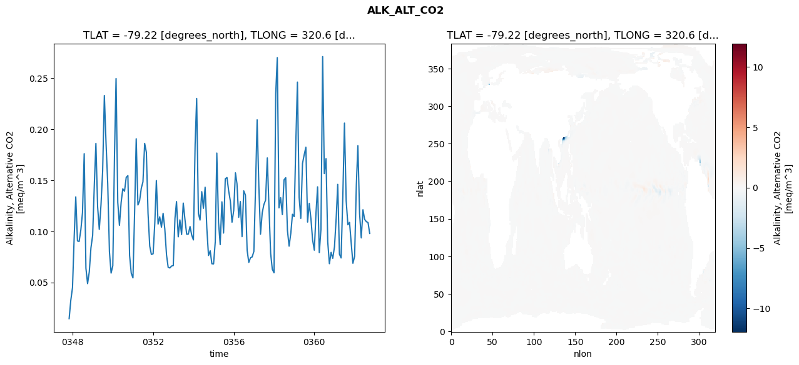
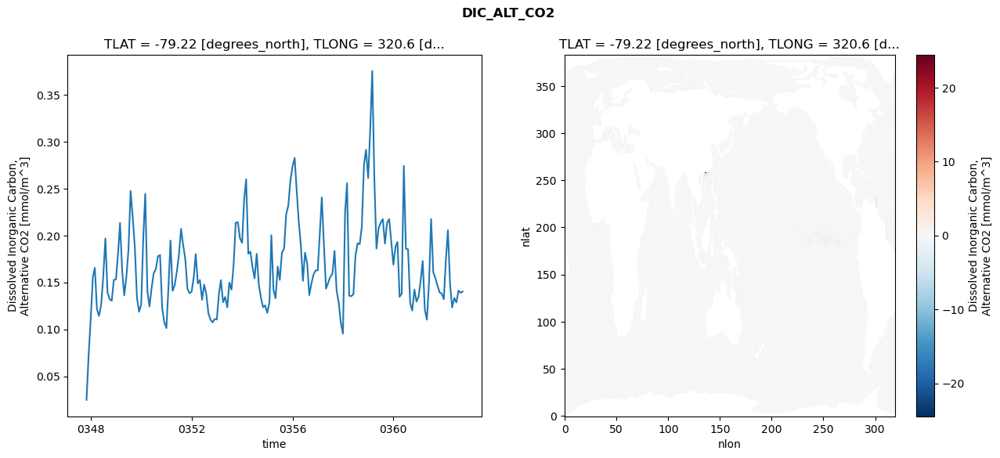
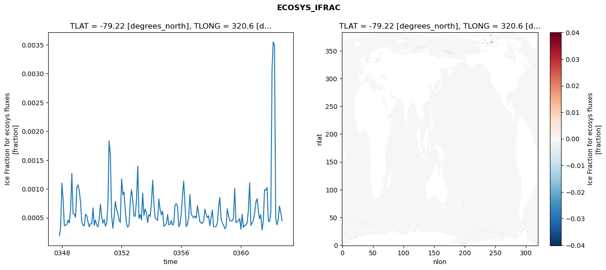
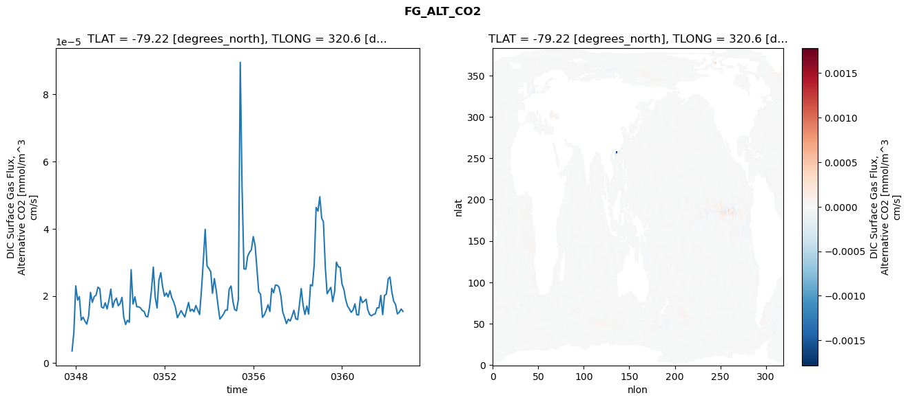

glb-dor_North_Atlantic_basin_004_1999-10-01_00019#
Simulation details#
Case: smyle.cdr-atlas-v0.glb-dor_North_Atlantic_basin_004_1999-10-01_00019.001
Basin: North_Atlantic_basin
Polygon: 4.0
Start date: 1999-10
Show code cell source Hide code cell source
import xarray as xr
import matplotlib.pyplot as plt
Show code cell source Hide code cell source
zarr_store = "/path/to/zarr/store"
# Parameters
zarr_store = "/global/cfs/projectdirs/m4746/Projects/Ocean-CDR-Atlas-v0/data/validation/smyle.cdr-atlas-v0.glb-dor_North_Atlantic_basin_004_1999-10-01_00019.001.validation.zarr"
Show code cell source Hide code cell source
%%time
ds_o = xr.open_zarr(zarr_store).compute()
ds_o
CPU times: user 680 ms, sys: 508 ms, total: 1.19 s
Wall time: 1.58 s
<xarray.Dataset> Size: 2MB
Dimensions: (nlat: 384, nlon: 320, time: 180)
Coordinates:
TLAT float64 8B -79.22
TLONG float64 8B 320.6
ULAT float64 8B -78.95
ULONG float64 8B 321.1
* time (time) object 1kB 0347-11-01 00:00:00 ... 0362-10-01 0...
z_t float32 4B 500.0
Dimensions without coordinates: nlat, nlon
Data variables:
ALK_ALT_CO2_diff (nlat, nlon) float32 492kB nan nan nan ... nan nan nan
ALK_ALT_CO2_rmse (time) float64 1kB 0.01456 0.03245 ... 0.1086 0.09795
DIC_ALT_CO2_diff (nlat, nlon) float32 492kB nan nan nan ... nan nan nan
DIC_ALT_CO2_rmse (time) float64 1kB 0.02478 0.07142 ... 0.1389 0.1402
ECOSYS_IFRAC_diff (nlat, nlon) float32 492kB nan nan nan ... nan nan nan
ECOSYS_IFRAC_rmse (time) float64 1kB 0.0001877 0.0003419 ... 0.000451
FG_ALT_CO2_diff (nlat, nlon) float32 492kB nan nan nan ... nan nan nan
FG_ALT_CO2_rmse (time) float64 1kB 3.613e-06 9.141e-06 ... 1.537e-05xarray.Dataset
- nlat: 384
- nlon: 320
- time: 180
- TLAT()float64-79.22
- long_name :
- array of t-grid latitudes
- units :
- degrees_north
array(-79.22052261)
- TLONG()float64320.6
- long_name :
- array of t-grid longitudes
- units :
- degrees_east
array(320.56250892)
- ULAT()float64-78.95
- long_name :
- array of u-grid latitudes
- units :
- degrees_north
array(-78.95289509)
- ULONG()float64321.1
- long_name :
- array of u-grid longitudes
- units :
- degrees_east
array(321.12500894)
- time(time)object0347-11-01 00:00:00 ... 0362-10-...
- bounds :
- time_bound
- long_name :
- time
array([cftime.DatetimeNoLeap(347, 11, 1, 0, 0, 0, 0, has_year_zero=True), cftime.DatetimeNoLeap(347, 12, 1, 0, 0, 0, 0, has_year_zero=True), cftime.DatetimeNoLeap(348, 1, 1, 0, 0, 0, 0, has_year_zero=True), cftime.DatetimeNoLeap(348, 2, 1, 0, 0, 0, 0, has_year_zero=True), cftime.DatetimeNoLeap(348, 3, 1, 0, 0, 0, 0, has_year_zero=True), cftime.DatetimeNoLeap(348, 4, 1, 0, 0, 0, 0, has_year_zero=True), cftime.DatetimeNoLeap(348, 5, 1, 0, 0, 0, 0, has_year_zero=True), cftime.DatetimeNoLeap(348, 6, 1, 0, 0, 0, 0, has_year_zero=True), cftime.DatetimeNoLeap(348, 7, 1, 0, 0, 0, 0, has_year_zero=True), cftime.DatetimeNoLeap(348, 8, 1, 0, 0, 0, 0, has_year_zero=True), cftime.DatetimeNoLeap(348, 9, 1, 0, 0, 0, 0, has_year_zero=True), cftime.DatetimeNoLeap(348, 10, 1, 0, 0, 0, 0, has_year_zero=True), cftime.DatetimeNoLeap(348, 11, 1, 0, 0, 0, 0, has_year_zero=True), cftime.DatetimeNoLeap(348, 12, 1, 0, 0, 0, 0, has_year_zero=True), cftime.DatetimeNoLeap(349, 1, 1, 0, 0, 0, 0, has_year_zero=True), cftime.DatetimeNoLeap(349, 2, 1, 0, 0, 0, 0, has_year_zero=True), cftime.DatetimeNoLeap(349, 3, 1, 0, 0, 0, 0, has_year_zero=True), cftime.DatetimeNoLeap(349, 4, 1, 0, 0, 0, 0, has_year_zero=True), cftime.DatetimeNoLeap(349, 5, 1, 0, 0, 0, 0, has_year_zero=True), cftime.DatetimeNoLeap(349, 6, 1, 0, 0, 0, 0, has_year_zero=True), cftime.DatetimeNoLeap(349, 7, 1, 0, 0, 0, 0, has_year_zero=True), cftime.DatetimeNoLeap(349, 8, 1, 0, 0, 0, 0, has_year_zero=True), cftime.DatetimeNoLeap(349, 9, 1, 0, 0, 0, 0, has_year_zero=True), cftime.DatetimeNoLeap(349, 10, 1, 0, 0, 0, 0, has_year_zero=True), cftime.DatetimeNoLeap(349, 11, 1, 0, 0, 0, 0, has_year_zero=True), cftime.DatetimeNoLeap(349, 12, 1, 0, 0, 0, 0, has_year_zero=True), cftime.DatetimeNoLeap(350, 1, 1, 0, 0, 0, 0, has_year_zero=True), cftime.DatetimeNoLeap(350, 2, 1, 0, 0, 0, 0, has_year_zero=True), cftime.DatetimeNoLeap(350, 3, 1, 0, 0, 0, 0, has_year_zero=True), cftime.DatetimeNoLeap(350, 4, 1, 0, 0, 0, 0, has_year_zero=True), cftime.DatetimeNoLeap(350, 5, 1, 0, 0, 0, 0, has_year_zero=True), cftime.DatetimeNoLeap(350, 6, 1, 0, 0, 0, 0, has_year_zero=True), cftime.DatetimeNoLeap(350, 7, 1, 0, 0, 0, 0, has_year_zero=True), cftime.DatetimeNoLeap(350, 8, 1, 0, 0, 0, 0, has_year_zero=True), cftime.DatetimeNoLeap(350, 9, 1, 0, 0, 0, 0, has_year_zero=True), cftime.DatetimeNoLeap(350, 10, 1, 0, 0, 0, 0, has_year_zero=True), cftime.DatetimeNoLeap(350, 11, 1, 0, 0, 0, 0, has_year_zero=True), cftime.DatetimeNoLeap(350, 12, 1, 0, 0, 0, 0, has_year_zero=True), cftime.DatetimeNoLeap(351, 1, 1, 0, 0, 0, 0, has_year_zero=True), cftime.DatetimeNoLeap(351, 2, 1, 0, 0, 0, 0, has_year_zero=True), cftime.DatetimeNoLeap(351, 3, 1, 0, 0, 0, 0, has_year_zero=True), cftime.DatetimeNoLeap(351, 4, 1, 0, 0, 0, 0, has_year_zero=True), cftime.DatetimeNoLeap(351, 5, 1, 0, 0, 0, 0, has_year_zero=True), cftime.DatetimeNoLeap(351, 6, 1, 0, 0, 0, 0, has_year_zero=True), cftime.DatetimeNoLeap(351, 7, 1, 0, 0, 0, 0, has_year_zero=True), cftime.DatetimeNoLeap(351, 8, 1, 0, 0, 0, 0, has_year_zero=True), cftime.DatetimeNoLeap(351, 9, 1, 0, 0, 0, 0, has_year_zero=True), cftime.DatetimeNoLeap(351, 10, 1, 0, 0, 0, 0, has_year_zero=True), cftime.DatetimeNoLeap(351, 11, 1, 0, 0, 0, 0, has_year_zero=True), cftime.DatetimeNoLeap(351, 12, 1, 0, 0, 0, 0, has_year_zero=True), cftime.DatetimeNoLeap(352, 1, 1, 0, 0, 0, 0, has_year_zero=True), cftime.DatetimeNoLeap(352, 2, 1, 0, 0, 0, 0, has_year_zero=True), cftime.DatetimeNoLeap(352, 3, 1, 0, 0, 0, 0, has_year_zero=True), cftime.DatetimeNoLeap(352, 4, 1, 0, 0, 0, 0, has_year_zero=True), cftime.DatetimeNoLeap(352, 5, 1, 0, 0, 0, 0, has_year_zero=True), cftime.DatetimeNoLeap(352, 6, 1, 0, 0, 0, 0, has_year_zero=True), cftime.DatetimeNoLeap(352, 7, 1, 0, 0, 0, 0, has_year_zero=True), cftime.DatetimeNoLeap(352, 8, 1, 0, 0, 0, 0, has_year_zero=True), cftime.DatetimeNoLeap(352, 9, 1, 0, 0, 0, 0, has_year_zero=True), cftime.DatetimeNoLeap(352, 10, 1, 0, 0, 0, 0, has_year_zero=True), cftime.DatetimeNoLeap(352, 11, 1, 0, 0, 0, 0, has_year_zero=True), cftime.DatetimeNoLeap(352, 12, 1, 0, 0, 0, 0, has_year_zero=True), cftime.DatetimeNoLeap(353, 1, 1, 0, 0, 0, 0, has_year_zero=True), cftime.DatetimeNoLeap(353, 2, 1, 0, 0, 0, 0, has_year_zero=True), cftime.DatetimeNoLeap(353, 3, 1, 0, 0, 0, 0, has_year_zero=True), cftime.DatetimeNoLeap(353, 4, 1, 0, 0, 0, 0, has_year_zero=True), cftime.DatetimeNoLeap(353, 5, 1, 0, 0, 0, 0, has_year_zero=True), cftime.DatetimeNoLeap(353, 6, 1, 0, 0, 0, 0, has_year_zero=True), cftime.DatetimeNoLeap(353, 7, 1, 0, 0, 0, 0, has_year_zero=True), cftime.DatetimeNoLeap(353, 8, 1, 0, 0, 0, 0, has_year_zero=True), cftime.DatetimeNoLeap(353, 9, 1, 0, 0, 0, 0, has_year_zero=True), cftime.DatetimeNoLeap(353, 10, 1, 0, 0, 0, 0, has_year_zero=True), cftime.DatetimeNoLeap(353, 11, 1, 0, 0, 0, 0, has_year_zero=True), cftime.DatetimeNoLeap(353, 12, 1, 0, 0, 0, 0, has_year_zero=True), cftime.DatetimeNoLeap(354, 1, 1, 0, 0, 0, 0, has_year_zero=True), cftime.DatetimeNoLeap(354, 2, 1, 0, 0, 0, 0, has_year_zero=True), cftime.DatetimeNoLeap(354, 3, 1, 0, 0, 0, 0, has_year_zero=True), cftime.DatetimeNoLeap(354, 4, 1, 0, 0, 0, 0, has_year_zero=True), cftime.DatetimeNoLeap(354, 5, 1, 0, 0, 0, 0, has_year_zero=True), cftime.DatetimeNoLeap(354, 6, 1, 0, 0, 0, 0, has_year_zero=True), cftime.DatetimeNoLeap(354, 7, 1, 0, 0, 0, 0, has_year_zero=True), cftime.DatetimeNoLeap(354, 8, 1, 0, 0, 0, 0, has_year_zero=True), cftime.DatetimeNoLeap(354, 9, 1, 0, 0, 0, 0, has_year_zero=True), cftime.DatetimeNoLeap(354, 10, 1, 0, 0, 0, 0, has_year_zero=True), cftime.DatetimeNoLeap(354, 11, 1, 0, 0, 0, 0, has_year_zero=True), cftime.DatetimeNoLeap(354, 12, 1, 0, 0, 0, 0, has_year_zero=True), cftime.DatetimeNoLeap(355, 1, 1, 0, 0, 0, 0, has_year_zero=True), cftime.DatetimeNoLeap(355, 2, 1, 0, 0, 0, 0, has_year_zero=True), cftime.DatetimeNoLeap(355, 3, 1, 0, 0, 0, 0, has_year_zero=True), cftime.DatetimeNoLeap(355, 4, 1, 0, 0, 0, 0, has_year_zero=True), cftime.DatetimeNoLeap(355, 5, 1, 0, 0, 0, 0, has_year_zero=True), cftime.DatetimeNoLeap(355, 6, 1, 0, 0, 0, 0, has_year_zero=True), cftime.DatetimeNoLeap(355, 7, 1, 0, 0, 0, 0, has_year_zero=True), cftime.DatetimeNoLeap(355, 8, 1, 0, 0, 0, 0, has_year_zero=True), cftime.DatetimeNoLeap(355, 9, 1, 0, 0, 0, 0, has_year_zero=True), cftime.DatetimeNoLeap(355, 10, 1, 0, 0, 0, 0, has_year_zero=True), cftime.DatetimeNoLeap(355, 11, 1, 0, 0, 0, 0, has_year_zero=True), cftime.DatetimeNoLeap(355, 12, 1, 0, 0, 0, 0, has_year_zero=True), cftime.DatetimeNoLeap(356, 1, 1, 0, 0, 0, 0, has_year_zero=True), cftime.DatetimeNoLeap(356, 2, 1, 0, 0, 0, 0, has_year_zero=True), cftime.DatetimeNoLeap(356, 3, 1, 0, 0, 0, 0, has_year_zero=True), cftime.DatetimeNoLeap(356, 4, 1, 0, 0, 0, 0, has_year_zero=True), cftime.DatetimeNoLeap(356, 5, 1, 0, 0, 0, 0, has_year_zero=True), cftime.DatetimeNoLeap(356, 6, 1, 0, 0, 0, 0, has_year_zero=True), cftime.DatetimeNoLeap(356, 7, 1, 0, 0, 0, 0, has_year_zero=True), cftime.DatetimeNoLeap(356, 8, 1, 0, 0, 0, 0, has_year_zero=True), cftime.DatetimeNoLeap(356, 9, 1, 0, 0, 0, 0, has_year_zero=True), cftime.DatetimeNoLeap(356, 10, 1, 0, 0, 0, 0, has_year_zero=True), cftime.DatetimeNoLeap(356, 11, 1, 0, 0, 0, 0, has_year_zero=True), cftime.DatetimeNoLeap(356, 12, 1, 0, 0, 0, 0, has_year_zero=True), cftime.DatetimeNoLeap(357, 1, 1, 0, 0, 0, 0, has_year_zero=True), cftime.DatetimeNoLeap(357, 2, 1, 0, 0, 0, 0, has_year_zero=True), cftime.DatetimeNoLeap(357, 3, 1, 0, 0, 0, 0, has_year_zero=True), cftime.DatetimeNoLeap(357, 4, 1, 0, 0, 0, 0, has_year_zero=True), cftime.DatetimeNoLeap(357, 5, 1, 0, 0, 0, 0, has_year_zero=True), cftime.DatetimeNoLeap(357, 6, 1, 0, 0, 0, 0, has_year_zero=True), cftime.DatetimeNoLeap(357, 7, 1, 0, 0, 0, 0, has_year_zero=True), cftime.DatetimeNoLeap(357, 8, 1, 0, 0, 0, 0, has_year_zero=True), cftime.DatetimeNoLeap(357, 9, 1, 0, 0, 0, 0, has_year_zero=True), cftime.DatetimeNoLeap(357, 10, 1, 0, 0, 0, 0, has_year_zero=True), cftime.DatetimeNoLeap(357, 11, 1, 0, 0, 0, 0, has_year_zero=True), cftime.DatetimeNoLeap(357, 12, 1, 0, 0, 0, 0, has_year_zero=True), cftime.DatetimeNoLeap(358, 1, 1, 0, 0, 0, 0, has_year_zero=True), cftime.DatetimeNoLeap(358, 2, 1, 0, 0, 0, 0, has_year_zero=True), cftime.DatetimeNoLeap(358, 3, 1, 0, 0, 0, 0, has_year_zero=True), cftime.DatetimeNoLeap(358, 4, 1, 0, 0, 0, 0, has_year_zero=True), cftime.DatetimeNoLeap(358, 5, 1, 0, 0, 0, 0, has_year_zero=True), cftime.DatetimeNoLeap(358, 6, 1, 0, 0, 0, 0, has_year_zero=True), cftime.DatetimeNoLeap(358, 7, 1, 0, 0, 0, 0, has_year_zero=True), cftime.DatetimeNoLeap(358, 8, 1, 0, 0, 0, 0, has_year_zero=True), cftime.DatetimeNoLeap(358, 9, 1, 0, 0, 0, 0, has_year_zero=True), cftime.DatetimeNoLeap(358, 10, 1, 0, 0, 0, 0, has_year_zero=True), cftime.DatetimeNoLeap(358, 11, 1, 0, 0, 0, 0, has_year_zero=True), cftime.DatetimeNoLeap(358, 12, 1, 0, 0, 0, 0, has_year_zero=True), cftime.DatetimeNoLeap(359, 1, 1, 0, 0, 0, 0, has_year_zero=True), cftime.DatetimeNoLeap(359, 2, 1, 0, 0, 0, 0, has_year_zero=True), cftime.DatetimeNoLeap(359, 3, 1, 0, 0, 0, 0, has_year_zero=True), cftime.DatetimeNoLeap(359, 4, 1, 0, 0, 0, 0, has_year_zero=True), cftime.DatetimeNoLeap(359, 5, 1, 0, 0, 0, 0, has_year_zero=True), cftime.DatetimeNoLeap(359, 6, 1, 0, 0, 0, 0, has_year_zero=True), cftime.DatetimeNoLeap(359, 7, 1, 0, 0, 0, 0, has_year_zero=True), cftime.DatetimeNoLeap(359, 8, 1, 0, 0, 0, 0, has_year_zero=True), cftime.DatetimeNoLeap(359, 9, 1, 0, 0, 0, 0, has_year_zero=True), cftime.DatetimeNoLeap(359, 10, 1, 0, 0, 0, 0, has_year_zero=True), cftime.DatetimeNoLeap(359, 11, 1, 0, 0, 0, 0, has_year_zero=True), cftime.DatetimeNoLeap(359, 12, 1, 0, 0, 0, 0, has_year_zero=True), cftime.DatetimeNoLeap(360, 1, 1, 0, 0, 0, 0, has_year_zero=True), cftime.DatetimeNoLeap(360, 2, 1, 0, 0, 0, 0, has_year_zero=True), cftime.DatetimeNoLeap(360, 3, 1, 0, 0, 0, 0, has_year_zero=True), cftime.DatetimeNoLeap(360, 4, 1, 0, 0, 0, 0, has_year_zero=True), cftime.DatetimeNoLeap(360, 5, 1, 0, 0, 0, 0, has_year_zero=True), cftime.DatetimeNoLeap(360, 6, 1, 0, 0, 0, 0, has_year_zero=True), cftime.DatetimeNoLeap(360, 7, 1, 0, 0, 0, 0, has_year_zero=True), cftime.DatetimeNoLeap(360, 8, 1, 0, 0, 0, 0, has_year_zero=True), cftime.DatetimeNoLeap(360, 9, 1, 0, 0, 0, 0, has_year_zero=True), cftime.DatetimeNoLeap(360, 10, 1, 0, 0, 0, 0, has_year_zero=True), cftime.DatetimeNoLeap(360, 11, 1, 0, 0, 0, 0, has_year_zero=True), cftime.DatetimeNoLeap(360, 12, 1, 0, 0, 0, 0, has_year_zero=True), cftime.DatetimeNoLeap(361, 1, 1, 0, 0, 0, 0, has_year_zero=True), cftime.DatetimeNoLeap(361, 2, 1, 0, 0, 0, 0, has_year_zero=True), cftime.DatetimeNoLeap(361, 3, 1, 0, 0, 0, 0, has_year_zero=True), cftime.DatetimeNoLeap(361, 4, 1, 0, 0, 0, 0, has_year_zero=True), cftime.DatetimeNoLeap(361, 5, 1, 0, 0, 0, 0, has_year_zero=True), cftime.DatetimeNoLeap(361, 6, 1, 0, 0, 0, 0, has_year_zero=True), cftime.DatetimeNoLeap(361, 7, 1, 0, 0, 0, 0, has_year_zero=True), cftime.DatetimeNoLeap(361, 8, 1, 0, 0, 0, 0, has_year_zero=True), cftime.DatetimeNoLeap(361, 9, 1, 0, 0, 0, 0, has_year_zero=True), cftime.DatetimeNoLeap(361, 10, 1, 0, 0, 0, 0, has_year_zero=True), cftime.DatetimeNoLeap(361, 11, 1, 0, 0, 0, 0, has_year_zero=True), cftime.DatetimeNoLeap(361, 12, 1, 0, 0, 0, 0, has_year_zero=True), cftime.DatetimeNoLeap(362, 1, 1, 0, 0, 0, 0, has_year_zero=True), cftime.DatetimeNoLeap(362, 2, 1, 0, 0, 0, 0, has_year_zero=True), cftime.DatetimeNoLeap(362, 3, 1, 0, 0, 0, 0, has_year_zero=True), cftime.DatetimeNoLeap(362, 4, 1, 0, 0, 0, 0, has_year_zero=True), cftime.DatetimeNoLeap(362, 5, 1, 0, 0, 0, 0, has_year_zero=True), cftime.DatetimeNoLeap(362, 6, 1, 0, 0, 0, 0, has_year_zero=True), cftime.DatetimeNoLeap(362, 7, 1, 0, 0, 0, 0, has_year_zero=True), cftime.DatetimeNoLeap(362, 8, 1, 0, 0, 0, 0, has_year_zero=True), cftime.DatetimeNoLeap(362, 9, 1, 0, 0, 0, 0, has_year_zero=True), cftime.DatetimeNoLeap(362, 10, 1, 0, 0, 0, 0, has_year_zero=True)], dtype=object) - z_t()float32500.0
- long_name :
- depth from surface to midpoint of layer
- positive :
- down
- units :
- centimeters
- valid_max :
- 537500.0
- valid_min :
- 500.0
array(500., dtype=float32)
- ALK_ALT_CO2_diff(nlat, nlon)float32nan nan nan nan ... nan nan nan nan
- cell_methods :
- time: mean
- grid_loc :
- 3111
- long_name :
- Alkalinity, Alternative CO2
- units :
- meq/m^3
array([[ nan, nan, nan, ..., nan, nan, nan], [ nan, nan, nan, ..., nan, nan, nan], [ 0.00317383, 0.00146484, -0.00390625, ..., nan, nan, nan], ..., [ nan, nan, nan, ..., nan, nan, nan], [ nan, nan, nan, ..., nan, nan, nan], [ nan, nan, nan, ..., nan, nan, nan]], dtype=float32) - ALK_ALT_CO2_rmse(time)float640.01456 0.03245 ... 0.1086 0.09795
- cell_methods :
- time: mean
- grid_loc :
- 3111
- long_name :
- Alkalinity, Alternative CO2
- units :
- meq/m^3
array([0.01456176, 0.03244831, 0.04492273, 0.09524758, 0.13369399, 0.09060891, 0.09006723, 0.10133328, 0.11820802, 0.17597462, 0.0639011 , 0.04882399, 0.06034828, 0.08380939, 0.09602309, 0.14690252, 0.18599222, 0.12396599, 0.10189303, 0.1258806 , 0.15894921, 0.23291341, 0.18556715, 0.14660912, 0.07997872, 0.05915221, 0.06629762, 0.17588766, 0.24945574, 0.12827911, 0.10587042, 0.12831011, 0.14161895, 0.13921168, 0.15272238, 0.15451601, 0.07638971, 0.05901577, 0.05442065, 0.12100442, 0.1905599 , 0.12574063, 0.129782 , 0.14214477, 0.14837901, 0.18601638, 0.17725915, 0.11766565, 0.08548504, 0.07731507, 0.07801942, 0.10835857, 0.14969404, 0.10711218, 0.11420274, 0.10407146, 0.11762872, 0.10229989, 0.0768429 , 0.06471084, 0.06416093, 0.06604188, 0.06644764, 0.11279447, 0.12910155, 0.09461671, 0.11116462, 0.09681106, 0.12762287, 0.11153791, 0.09711849, 0.09730145, 0.10470603, 0.09626967, 0.09156591, 0.18507767, 0.2299667 , 0.11744102, 0.11100587, 0.13879731, 0.12249198, 0.14316034, 0.1031047 , 0.07636532, 0.08098923, 0.06825556, 0.0681046 , 0.08998189, 0.17654373, 0.10888198, 0.08696528, 0.12885488, 0.09829867, 0.15140345, 0.15259757, 0.1397027 , 0.12962125, 0.10891148, 0.12038954, 0.15720706, 0.14658982, 0.11368587, 0.12912247, 0.09478111, 0.1396283 , 0.13547532, 0.08149775, 0.06955684, 0.07417615, 0.07492974, 0.08036263, 0.14462818, 0.20908253, 0.14452679, 0.09717326, 0.11799255, 0.12609981, 0.13050017, 0.17179063, 0.12432108, 0.07832259, 0.06287318, 0.05940315, 0.23459728, 0.26992766, 0.1229495 , 0.13292708, 0.116368 , 0.15031542, 0.15244173, 0.10093129, 0.08550707, 0.09801702, 0.11664683, 0.11441515, 0.18885314, 0.24596386, 0.13317392, 0.11267214, 0.16637899, 0.17471451, 0.18230618, 0.10905346, 0.12734761, 0.11207222, 0.09156391, 0.08158205, 0.11843637, 0.14349026, 0.07914583, 0.1018127 , 0.27091154, 0.15650113, 0.17109931, 0.0896803 , 0.06836247, 0.07941003, 0.07358253, 0.08475701, 0.11290294, 0.14589468, 0.07762982, 0.07393711, 0.13358001, 0.20585608, 0.1298966 , 0.10638099, 0.10869755, 0.08786529, 0.06876249, 0.07551551, 0.14536348, 0.18378811, 0.11718759, 0.09356158, 0.12109948, 0.11168129, 0.10947475, 0.10855454, 0.09795151]) - DIC_ALT_CO2_diff(nlat, nlon)float32nan nan nan nan ... nan nan nan nan
- cell_methods :
- time: mean
- grid_loc :
- 3111
- long_name :
- Dissolved Inorganic Carbon, Alternative CO2
- units :
- mmol/m^3
array([[ nan, nan, nan, ..., nan, nan, nan], [ nan, nan, nan, ..., nan, nan, nan], [0.01293945, 0.01147461, 0.0065918 , ..., nan, nan, nan], ..., [ nan, nan, nan, ..., nan, nan, nan], [ nan, nan, nan, ..., nan, nan, nan], [ nan, nan, nan, ..., nan, nan, nan]], dtype=float32) - DIC_ALT_CO2_rmse(time)float640.02478 0.07142 ... 0.1389 0.1402
- cell_methods :
- time: mean
- grid_loc :
- 3111
- long_name :
- Dissolved Inorganic Carbon, Alternative CO2
- units :
- mmol/m^3
array([0.02478213, 0.07141855, 0.11167903, 0.1558117 , 0.16547324, 0.12147158, 0.11431249, 0.12623601, 0.1561317 , 0.19684275, 0.13915616, 0.13224297, 0.13040329, 0.15264803, 0.1531198 , 0.18197165, 0.21334862, 0.16219759, 0.13612278, 0.15613649, 0.184876 , 0.24739721, 0.21897787, 0.18759798, 0.13338956, 0.11871234, 0.12634563, 0.1990986 , 0.24445201, 0.14036826, 0.12423998, 0.14399085, 0.15976883, 0.16423567, 0.17778336, 0.17914828, 0.12236676, 0.10765853, 0.1012429 , 0.14683098, 0.1945809 , 0.1409321 , 0.14696333, 0.16144881, 0.17925855, 0.20707539, 0.18935384, 0.17524114, 0.14342993, 0.13849284, 0.14001037, 0.15570765, 0.18013886, 0.14883106, 0.15250242, 0.13148337, 0.14759937, 0.13773443, 0.1169562 , 0.11032106, 0.10738502, 0.11101636, 0.11042551, 0.1383497 , 0.15242593, 0.12877119, 0.13448553, 0.12339632, 0.14984339, 0.14216291, 0.16925393, 0.21348834, 0.21420992, 0.19714196, 0.19218199, 0.23923718, 0.25997082, 0.18058967, 0.18262303, 0.16626783, 0.15421276, 0.18041483, 0.14760348, 0.13370064, 0.12348239, 0.12550225, 0.11756057, 0.12864696, 0.20026058, 0.14187749, 0.13316515, 0.16684046, 0.15268381, 0.18183007, 0.18578813, 0.22234011, 0.23166642, 0.2584493 , 0.27349356, 0.28269108, 0.2495049 , 0.21493812, 0.19041274, 0.15171392, 0.18163779, 0.17035441, 0.13643859, 0.14861104, 0.15822319, 0.1627067 , 0.16287923, 0.20380341, 0.24055431, 0.18918956, 0.14328113, 0.14973546, 0.15585396, 0.15902074, 0.18350347, 0.14139948, 0.12844954, 0.10698661, 0.09538466, 0.22456275, 0.25561759, 0.13576199, 0.13523751, 0.13735382, 0.17824547, 0.19161244, 0.19075997, 0.20955377, 0.2751673 , 0.29137863, 0.26111657, 0.3154049 , 0.37527509, 0.25865052, 0.18600906, 0.20808137, 0.21360443, 0.21739755, 0.1912834 , 0.2133622 , 0.21746431, 0.19390472, 0.16889808, 0.18820484, 0.19309362, 0.13461182, 0.13792799, 0.27419923, 0.18579166, 0.18523849, 0.12782991, 0.1199415 , 0.14229747, 0.12951394, 0.13493861, 0.1527427 , 0.17286412, 0.12101375, 0.11028337, 0.15032101, 0.21752241, 0.16080601, 0.15438764, 0.14671963, 0.13924732, 0.13810823, 0.13204947, 0.17568997, 0.2055961 , 0.14818938, 0.12323494, 0.1333129 , 0.12860621, 0.1411728 , 0.13892551, 0.14024248]) - ECOSYS_IFRAC_diff(nlat, nlon)float32nan nan nan nan ... nan nan nan nan
- cell_methods :
- time: mean
- grid_loc :
- 2110
- long_name :
- Ice Fraction for ecosys fluxes
- units :
- fraction
array([[ nan, nan, nan, ..., nan, nan, nan], [ nan, nan, nan, ..., nan, nan, nan], [2.38418579e-06, 2.56299973e-06, 1.41859055e-05, ..., nan, nan, nan], ..., [ nan, nan, nan, ..., nan, nan, nan], [ nan, nan, nan, ..., nan, nan, nan], [ nan, nan, nan, ..., nan, nan, nan]], dtype=float32) - ECOSYS_IFRAC_rmse(time)float640.0001877 0.0003419 ... 0.000451
- cell_methods :
- time: mean
- grid_loc :
- 2110
- long_name :
- Ice Fraction for ecosys fluxes
- units :
- fraction
array([0.00018773, 0.00034185, 0.00109934, 0.00080489, 0.00036093, 0.00037153, 0.00038046, 0.00045925, 0.00040731, 0.00063771, 0.00126722, 0.00056844, 0.00056245, 0.00050899, 0.00101962, 0.00107136, 0.0009715 , 0.00076968, 0.00043793, 0.00036845, 0.00035845, 0.00056113, 0.00053196, 0.00042771, 0.00034342, 0.00039571, 0.00039513, 0.00067003, 0.00036818, 0.00046223, 0.00037427, 0.00034018, 0.00046832, 0.00073191, 0.00051806, 0.00040344, 0.00047115, 0.00035351, 0.00040317, 0.00075589, 0.00183295, 0.00160045, 0.00054865, 0.00031831, 0.00050174, 0.00078021, 0.0006391 , 0.00057572, 0.00046123, 0.00041801, 0.00117289, 0.00089913, 0.00094392, 0.00062115, 0.00039665, 0.00033662, 0.00037392, 0.00079243, 0.00098561, 0.00080687, 0.0005245 , 0.00052748, 0.0008215 , 0.00139735, 0.00048797, 0.00055605, 0.00046058, 0.00092784, 0.00053911, 0.00065244, 0.00057882, 0.00041283, 0.00055706, 0.00052156, 0.00075968, 0.00115148, 0.00076416, 0.00049888, 0.0004751 , 0.00045479, 0.00082482, 0.00064165, 0.00055135, 0.00061544, 0.00035221, 0.00036952, 0.00040028, 0.00055616, 0.00037733, 0.00038495, 0.00045032, 0.00037245, 0.00039486, 0.00072091, 0.00074384, 0.00069333, 0.00034248, 0.00038994, 0.00056414, 0.00091256, 0.00113661, 0.0007251 , 0.00034684, 0.00038205, 0.0005158 , 0.00090221, 0.00055253, 0.00053278, 0.00049797, 0.00052824, 0.00049107, 0.00070878, 0.00057425, 0.00043162, 0.00040656, 0.00040509, 0.0004421 , 0.00064997, 0.00055977, 0.00050062, 0.00053479, 0.00036066, 0.00050626, 0.00063398, 0.00034748, 0.00034331, 0.00034557, 0.00040373, 0.00066728, 0.00084972, 0.00048606, 0.00040521, 0.00037348, 0.00030974, 0.0003387 , 0.00065702, 0.00053484, 0.00045217, 0.00044387, 0.00044319, 0.00048726, 0.0010102 , 0.00041709, 0.0004271 , 0.00044693, 0.0004861 , 0.00029769, 0.00056161, 0.0003307 , 0.000371 , 0.00036806, 0.00041016, 0.00062442, 0.00110456, 0.00036786, 0.00040656, 0.00046145, 0.00056936, 0.00077144, 0.00083101, 0.00062049, 0.00048201, 0.00055234, 0.00028652, 0.00044036, 0.00098658, 0.00097729, 0.00102576, 0.00044074, 0.00043369, 0.00058832, 0.00308753, 0.00354974, 0.00348919, 0.0004923 , 0.00037718, 0.00047137, 0.00070137, 0.00059133, 0.00045103]) - FG_ALT_CO2_diff(nlat, nlon)float32nan nan nan nan ... nan nan nan nan
- cell_methods :
- time: mean
- grid_loc :
- 2110
- long_name :
- DIC Surface Gas Flux, Alternative CO2
- units :
- mmol/m^3 cm/s
array([[ nan, nan, nan, ..., nan, nan, nan], [ nan, nan, nan, ..., nan, nan, nan], [-9.8114583e-09, -1.8396264e-08, -1.1018765e-08, ..., nan, nan, nan], ..., [ nan, nan, nan, ..., nan, nan, nan], [ nan, nan, nan, ..., nan, nan, nan], [ nan, nan, nan, ..., nan, nan, nan]], dtype=float32) - FG_ALT_CO2_rmse(time)float643.613e-06 9.141e-06 ... 1.537e-05
- cell_methods :
- time: mean
- grid_loc :
- 2110
- long_name :
- DIC Surface Gas Flux, Alternative CO2
- units :
- mmol/m^3 cm/s
array([3.61313945e-06, 9.14074051e-06, 2.29877302e-05, 1.87501216e-05, 1.97693086e-05, 1.27887662e-05, 1.36583621e-05, 1.24767398e-05, 1.15952024e-05, 1.39899515e-05, 2.10491136e-05, 1.80957228e-05, 1.97934404e-05, 2.02117185e-05, 2.25833935e-05, 2.21497385e-05, 1.66964072e-05, 1.63720464e-05, 1.79590506e-05, 1.61136237e-05, 1.86981223e-05, 2.20297521e-05, 1.65751878e-05, 1.84982300e-05, 1.93262288e-05, 1.70690325e-05, 1.77704965e-05, 1.95811836e-05, 1.37314848e-05, 1.14940014e-05, 1.27482998e-05, 1.21442960e-05, 2.78112633e-05, 1.75768169e-05, 1.97313247e-05, 1.67731577e-05, 1.67472875e-05, 1.64515153e-05, 1.56692966e-05, 1.53506956e-05, 1.39223558e-05, 1.37710784e-05, 1.68483267e-05, 2.18799289e-05, 2.85823741e-05, 1.95682279e-05, 1.64168763e-05, 2.46596085e-05, 2.69187867e-05, 2.26907494e-05, 1.99377489e-05, 2.08778930e-05, 1.96925017e-05, 2.15459412e-05, 1.94360978e-05, 1.81949564e-05, 1.64561297e-05, 1.35178990e-05, 1.45781475e-05, 1.56175197e-05, 1.46297998e-05, 1.37225803e-05, 1.59208527e-05, 1.80430770e-05, 1.54504962e-05, 1.60341205e-05, 1.52827537e-05, 1.71462703e-05, 1.57642177e-05, 1.44594482e-05, 2.17892854e-05, 3.02598682e-05, 3.98004926e-05, 2.89804194e-05, 2.81578655e-05, 2.71629991e-05, 2.07836479e-05, 2.51443385e-05, 2.17392469e-05, 1.70660072e-05, ... 2.84164514e-05, 2.12445124e-05, 2.04938437e-05, 1.36162287e-05, 1.43453667e-05, 1.56768506e-05, 1.73611305e-05, 1.53564150e-05, 2.22521670e-05, 2.09413951e-05, 2.32243332e-05, 2.31414041e-05, 2.26271743e-05, 1.99209419e-05, 1.52020795e-05, 1.35447638e-05, 1.17539777e-05, 1.30703062e-05, 1.25445021e-05, 1.39871604e-05, 1.57237090e-05, 1.31888404e-05, 1.29663161e-05, 1.75540434e-05, 2.21731358e-05, 1.72076106e-05, 1.44830634e-05, 1.70210158e-05, 1.45919917e-05, 2.33223269e-05, 2.30004210e-05, 2.92968886e-05, 4.63573375e-05, 4.52421502e-05, 4.95207459e-05, 4.31099951e-05, 4.20663353e-05, 2.86985552e-05, 2.06634208e-05, 2.16015676e-05, 2.25381434e-05, 1.82997034e-05, 2.12592042e-05, 3.00571456e-05, 2.86864188e-05, 2.85277993e-05, 2.35144404e-05, 2.19327604e-05, 1.90445047e-05, 1.70069500e-05, 1.61563961e-05, 1.51082986e-05, 1.57978106e-05, 1.76117811e-05, 1.43914521e-05, 1.43176046e-05, 1.97811221e-05, 1.80225049e-05, 1.84243485e-05, 1.90219213e-05, 1.58830829e-05, 1.44472791e-05, 1.40707224e-05, 1.44907332e-05, 1.46404751e-05, 1.64461315e-05, 1.64636281e-05, 2.01567616e-05, 1.44166710e-05, 2.01087024e-05, 2.05613052e-05, 2.51070630e-05, 2.56145657e-05, 2.11575702e-05, 1.84324814e-05, 1.74562183e-05, 1.46462449e-05, 1.51431377e-05, 1.61030381e-05, 1.53745657e-05])
- timePandasIndex
PandasIndex(CFTimeIndex([0347-11-01 00:00:00, 0347-12-01 00:00:00, 0348-01-01 00:00:00, 0348-02-01 00:00:00, 0348-03-01 00:00:00, 0348-04-01 00:00:00, 0348-05-01 00:00:00, 0348-06-01 00:00:00, 0348-07-01 00:00:00, 0348-08-01 00:00:00, ... 0362-01-01 00:00:00, 0362-02-01 00:00:00, 0362-03-01 00:00:00, 0362-04-01 00:00:00, 0362-05-01 00:00:00, 0362-06-01 00:00:00, 0362-07-01 00:00:00, 0362-08-01 00:00:00, 0362-09-01 00:00:00, 0362-10-01 00:00:00], dtype='object', length=180, calendar='noleap', freq='MS'))
Show code cell source Hide code cell source
variables = [v[:-5] for v in ds_o.variables if "_rmse" in v]
Show code cell source Hide code cell source
plt.rcParams.update({'figure.max_open_warning': 0})
for v in variables:
fig, axs = plt.subplots(1, 2, figsize=(15, 6))
ds_o[f"{v}_rmse"].plot(ax=axs[0])
ds_o[f"{v}_diff"].plot(ax=axs[1])
plt.suptitle(v, fontweight="bold")



